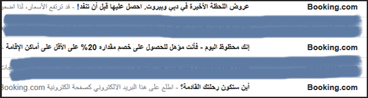
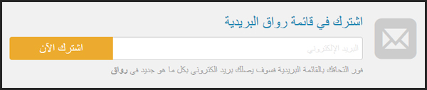
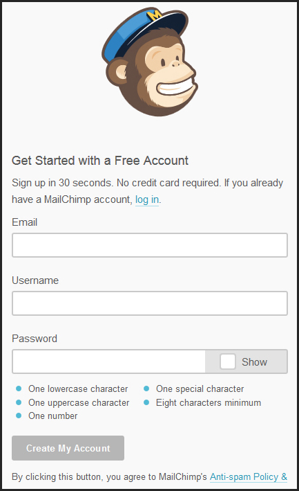
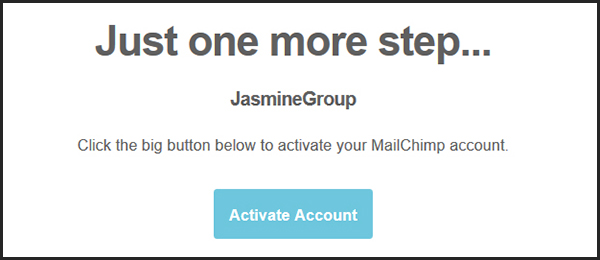
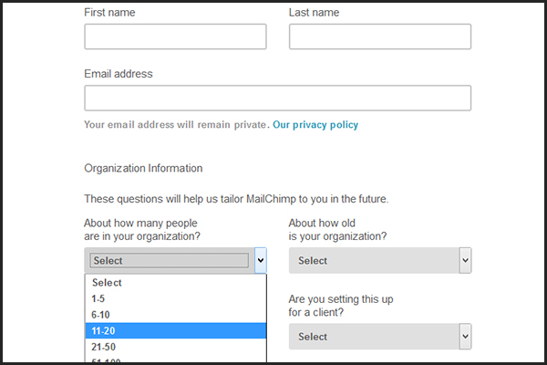
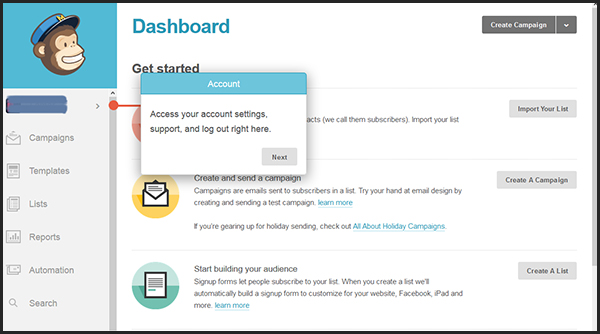
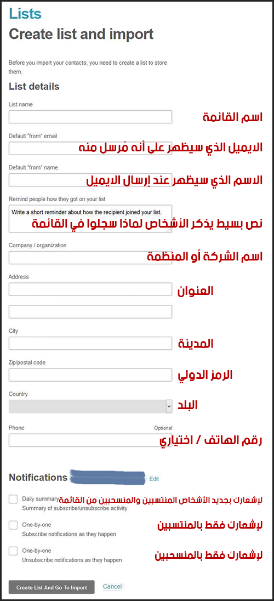
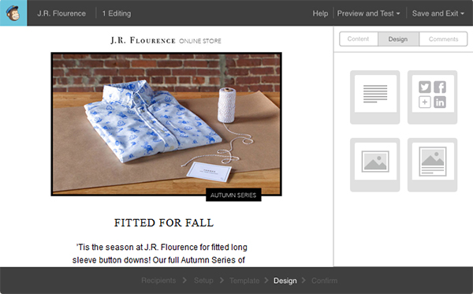
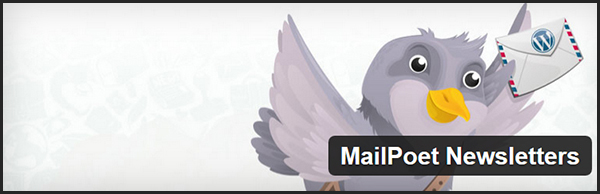
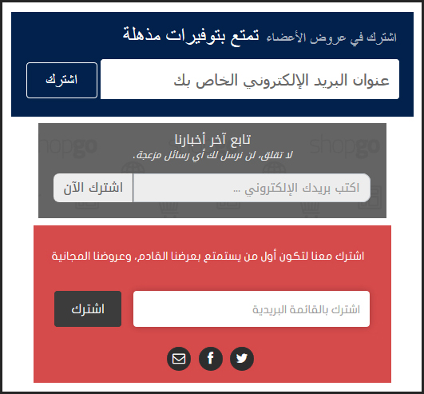

في ظل التوجه العالمي الواضح من قبل الحكومات وحاضنات الأعمال نحو دعم المشاريع الريادية نظراً لما تحمله من انعكاسات كبيرة في دعم الاقتصادات وتشغيل الكفاءات، بدأ نمو مُطّرد في الشركات الناشئة واحتدّت المُنافسة مع انفتاح الزبائن وارتفاع مستوى تطلعاتهم بحيث أصبحت عمليات الاتصال من أهم الأسس التي تُركز عليها الشركات للبقاء ضمن ساحة اللعب ومن أهم العوامل التي تُميزها.
يُدرك مدراء التسويق تمامًا أن التكنولوجيا باتت مُتغلغلة في تفاصيل الحياة اليومية لبني البشر وأن أحد أهم الخيارات للانتشار الواسع ونمو الاسم التجاري وزيادة البيع لأي شركة ناشئة سواء أكانت تمارس أعمالها على الأرض أو عبر الشبكة هو الاعتماد على التسويق الالكتروني.
تعددت أساليب التسويق الالكتروني والتواصل مع الزبائن عبر القنوات المختلفة من وجود مواقع إلكترونية ونوافذ حوارية إلى وجود قنوات للتواصل الاجتماعي ومحركات بحث، إلا أنه وبحسب العديد من الدراسات ما يزال البريد الالكتروني هو الملك في عملية التسويق وتفوقت القوائم البريدية في التسويق على جميع الوسائل الأخرى.
حينما نتحدث عن القوائم البريدية فنحن بالتأكيد نعني القوائم البريدية النظامية البعيدة عن أي محتوى مُزعج (spam)، وهي القوائم التي أضاف متابعوها عناوين بريدهم من تلقاء أنفسهم بحسب اهتماماتهم وهم يعلمون بأن لديهم الإمكانية والحق لإلغاء متابعتهم بأي وقت.
تعتمد الشركات الناشئة الناجحة منها على استغلال القوائم البريدية مستفيدة من ميزات عديدة نذكر منها:
أيقنت مُعظم الشركات الناجحة أن استخدامها للقوائم البريدية يُعد من أكثر الوسائل فعاليّة كما أنها الأقل تكلفة، ولكل شركة توجهات خاصة في طريقة استخدامها للقوائم اشتركت جميعها بزبائن سُعداء والمزيد من الزبائن السُعداء! دعونا نُسلط الضوء على بعض تلك الشركات:
شركة Booking: وهي إحدى أكبر الشركات المُتخصصة في حجوز الفنادق المُباشرة عبر الإنترنت والخدمات المرفقة لها. تقوم الشركة بالترويج عبر قائمتها البريدية بطريقة ذكيّة للغاية، بحيث تُرسل لزبائنها ومشتركيها عروضًا تُناسب اهتماماتهم وتشجعهم على الطلب، فلو افترضنا على سبيل المثال بأنك بحثت ضمن حسابك بالموقع على فنادق في مدينة دبي وقمت بمقارنة هذه الفنادق لفترة بسيطة (سواء حجزت عبر الموقع أو لم تفعل) سيحفظ الموقع بشكل آلي اهتماماتك لتجد بأنه أرسل لك لاحقاً ضمن قائمته عروضًا جارية حالياً على فنادق في دبي تحت مسمى "عروض موصى بها".

شركة كاش يو: الجميل في شركة كاش يو للدفع الإلكتروني أنها لا تترك مناسبة لتقديم العروض عبر البريد إلا واستغلّتها، إضافة إلى ذلك فهي تُساعد في نشر عروض تجارها المميزين عبر قائمتها البريدية وتشجّع على الشراء مما يعود عليها بالفائدة هي أيضاً! تُرسل كاش يو رسالة واحد كل 3-5 أيام.
شركة Fiverr: يُعد موقع Fiverr الإلكتروني من أكبر المواقع الإلكترونية على مستوى العالم في بيع وشراء الخدمات المصغرة. يُحرّض الموقع عبر قائمته البريدية بطرق ذكية متابعيه على استغلال الفرص والعروض، كما أنه ينشر بشكل دوري أهم المواضيع المنشورة في المدونة الخاصة والتي تحوي على إعلانات ونصائح نبيلة غرضها تقديم نصائح للمشتركين بطرق زيادة مبيعاتهم مع قصص نجاح بعضهم في الموقع. إذا كنت مُشتركًا بالموقع بالفعل كبائع أو كمشترٍ سوف تُفاجئ في يوم من الأيام بأن الموقع يُقدّم لك على طبق من ذهب خدمات مجانية مدفوعة من طرفه في مُناسبات معيّنة، ولن يتردد على المستوى البعيد في تذكيرك بأهم الخدمات التي وضعتها في مُفضلتك ذات يوم! يُرسل الموقع حوالي 4 رسائل أسبوعياً.
لم تغفل مُعظم الشركات الناشئة الناجحة (مهما اختلف توجّهها) وحتى قبل انطلاقتها أن تُقيم قائمة بريدية للمُهتمين، نذكر على سبيل الأمثلة:
منصة رواق: رواق هي منصة إلكترونية عربية تهتم بثقافة نشر التعليم المجاني، تستخدم المنصة قائمتها البريدية في الترويج لجديد المواد والمحاضرات المضافة بالموقع لتُبقي المهتمين على اطلاع دائم. 
تسويق أون لاين: تُعد شركة تسويق أون لاين المتخصصة بالتسويق والبيع على شبكة الإنترنت من أكثر الشركات حرصاً على استخدام القوائم البريدية بطرق فعّالة وذلك للترويج عن خدماتها وزيادة مبيعاتها، فهي تبدأ معك كمتابع جديد بتقديم الاستشارات والنصح عبر النشرات البريدية وصولًا إلى تشجيعك على الشراء والاستفادة من خدماتها.
سنتحدث في هذا التبويب عن أهم الخدمات المتوفرة وفق التوجهات التالية:
هُناك العديد من المواقع المميزة التي تُقدم خدمة إرسال وتنسيق القوائم البريدية ومعظمها يوفر اشتراكات مجانية محدودة الميزات مع اشتراكات مأجورة احترافية للأعمال والشركات، نذكر منها: GetResponse، وأيضاً Customer ولعل إحدى أفضلها على الإطلاق خدمة MailChimp!
تُقدم شركة MailChimp خدمة إنشاء وإدارة وإرسال القوائم البريدية عبر موقعها، وتدعم الخدمة حتى الآن مئات الآلاف من الشركات ورواد الأعمال حول العالم. سبب اختيارنا لهذه الخدمة كونها تدعم اللغة العربية بشكل جيّد نسبياً مقارنة بمواقع أخرى إضافة إلى سهولة استخدامها كما أن الموقع يوفر مدّة غير محدودة للاستخدام المجاني المحدود بعدد 2000 مُشترك لقائمتك البريدية، وهو حد جيّد للتجريب والترويج لشركتك الناشئة ثم بإمكانك ببساطة توسيع الميزات عبر طلب إحدى الخطط المأجورة التي يوفرها الموقع.
بالإمكان الاشتراك بالموقع ببساطة من خلال اتباع ما يلي:
تعبئة بيانات التسجيل المجاني في الموقع (البريد الإلكتروني واسم المستخدم وكلمة المرور) كما هو موضح: 
ستُرسل إليك بعد ذلك رسالة بريدية عليك تأكيدها لتثبيت الاشتراك في الموقع. 
ستظهر لك بعد ذلك قائمة طويلة تفصيلية بالبيانات الخاصة بعملك والتي يحتاج الموقع معرفتها، عليك تعبئتها بشكل صحيح. 
تهانينا! بعد تعبئة البيانات بشكل كامل ستدخل مُباشرة للتعرف على حسابك بالموقع. 
ستلاحظ على الفور بأن لوحة تحكم حسابك واضحة وسهلة الاستخدام وهي تحوي التفاصيل الرئيسية التالية: القوالب والقوائم البريدية وإحصائيات وتقارير الإرسال ونافذة الإرسال التلقائي للرسائل.
نأتي الآن إلى شرح خيارات الموقع الرئيسية:
نضغط زر "Import your list" ثم نقوم بتسجيل بيانات القائمة المطلوبة بحسب الآتي: 
عندها سيظهر عدد كبير من خيارات استرداد القائمة مثل الاستيراد من ملف نصي بسيط أو ملف من النوع CSV أو نسخ العناوين مُباشرة من ملف Excel وأنواع أخرى من الخدمات، مثل استرداد العناوين الموجودة على حسابك في Google Drive.
نضغط على زر "Create a campaign":
بعد الاختيار والانتقال إلى الخطوة التالية سيتم طلب مجموعة من التفاصيل لتعبئتها (عنوان موضوع الرسالة، بالإضافة إلى خيارات لها علاقة بالإحصائيات).
ثم بالخطوة التالية تختار ببساطة أي من القوالب الجاهزة المتوفرة للرسالة وتقم بتعبئة الرسالة وإرسالها للقائمة. (تلميح: بالإمكان في هذه الخطوة استيراد كود من موقعك أو كود أي موضوع في مدونتك ونسخه بالرسالة)

لإنشاء النموذج ننتقل إلى القسم "Lists" (بعد أن تمّ إنشاء قائمة بريديّة)، ثم نضغط على الخيار "Signup Forms" ثم نقوم باختيار نوع النموذج الذي نريد لنقوم بعد ذلك بتعديل أية إعدادات ثم نسخ الكود النهائي الجاهز ضمن أي مكان في الموقع الخاص بشركتك.
هناك العديد من الإضافات الجاهزة للمدونات الإلكترونية، وسنتناول في هذا السياق مدونات WordPress والتي تُعد من أشهر برامج التدوين مفتوحة المصدر.
لعمل قائمة بريدية خاصة بمدونة WordPress بإمكانك استخدام موقع MailChimp الذي تحدثنا عنه آنفاً وتسجيل حساب عليه ثم ربط النموذج مع المدونة؛ أو الاستفادة من خيار سريع ننصح به وهي إحدى أشهر وأهم الإضافات المجانية وتُدعى MailPoet Newsletters

هي إضافة لـWordPress تعمل على إنشاء قوائم بريدية وتنسيق وإرسال الرسائل بكل بساطة وسرعة. الإضافة مجانية وهي محدودة بحد إرسال أقصى 2000 مشترك وقد وفرت الشركة المُبرمجة لها مجموعة من الرخص المختلفة للترقية إلى الشكل الاحترافي حسب الطلب.
أما عن كيفية تنصيب الإضافة فبإمكانك اتباع الخطوات البسيطة التالية:
في هذا السياق نسلط الضوء على خدمة FeedBurner التي استحوذت عليها شركة Google في عام 2007 مسبّبةً قفزة نوعية في خدمات النشر RSS وخدمات أخرى مُفيدة لأصحاب المواقع، ومن أهم الخدمات التي توفرها إمكانية إنشاء قائمة بريدية تسمح لمتابعي الموقع بالاطّلاع على جديد النشر في الموقع عبر تسجيل البريد ودون تدخل من مدير الموقع.
الخدمة مفيدة جداً لأصحاب الشركات الناشئة ممن لديهم مدونات تسويقية مُلحقة بموقع عملهم وذلك لنشر جديد مقالاتهم بشكل آلي إلى متابعيهم المهتمين وبالتالي تحقيق علاقة وطيدة بين الشركة والزبائن والمهتمين وإبقائهم ضمن مرمى الاستهداف التسويقي لأي منتجات أو خدمات جديدة مطروحة.
أما عن طريقة الاشتراك في خدمة النشرات البريدية فعليك أولًا إنشاء حساب Google (إن لم يكن لديك) ومن ثم تسجيل موقعك في الصفحة http://feedburner.google.com وبعد التسجيل توجّه إلى تبويب "Publicize" ثم الخيار "Email Subscriptions" والضغط على زر "Activate" لتفعيل القائمة ثم نسخ النصّ البرمجيّ الآليّ المولّد ولصقه في المكان المناسب في موقعك.
الخطوة الأولى تكمن في إقناع الأشخاص المهتمين بتقديمهم عناوين بريدهم وأيضاً أية معلومات أخرى تهم القسم التسويقي لشركتك (مثل المهنة والجنس والعمر... إلخ.) دون تردد من طرفهم وبكل رحابة صدر.
والتالي مجموعة من أهم النصائح التي يمكن اتباعها:
الصورة التالية توضح مجموعة من نوافذ طلب الاشتراك في القائمة لمجموعة من الشركات العربية الناجحة: 
التالي مجموعة لأهم الأمور التي تتبعها أفضل الشركات استغلالاً للنشرات البريدية:
في النّهاية: إن الأهمية الكبرى للقائمة البريدية تكمن في وضع شركتك الناشئة على مسار واضح وأمام أعين الناس الباحثين عن مُنتجاتك والمُهتمين بخدماتك، قد لا تكون لديهم القدرة اليوم على اتخاذ القرار إنما حتماً بمتابعتهم المُستمرة ومُساعدتهم وخلق الثقة معهم ستجدهم وقد تحوّلوا بين عشيّة وضحاها من مُتابعين إلى زبائن حقيقيين لتستيقظ وحساب شركتك مليء بالدولارات. تلك هي قواعد اللُعبة!